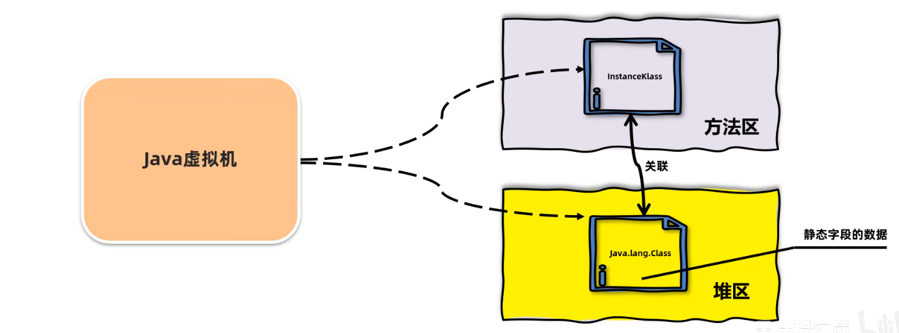
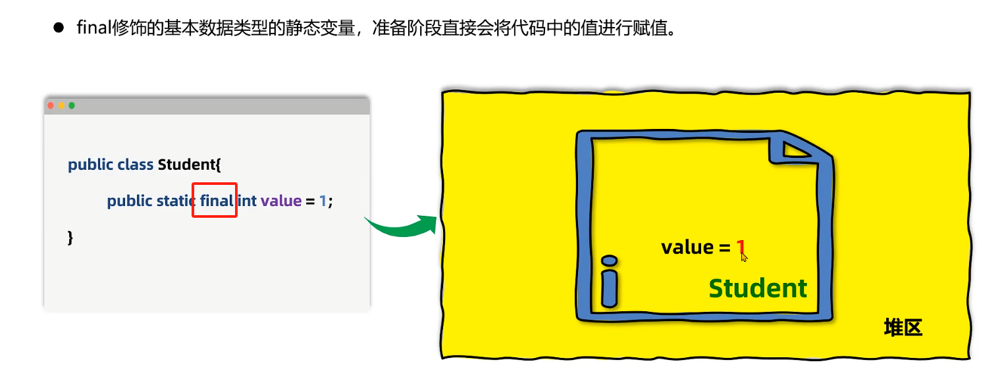

3-类的生命周期
类的生命周期
描述的是一个类加载，使用，卸载的过程
加载
连接
验证
准备
解析
初始化
使用
卸载
加载阶段
类加载器根据类的全限定名通过不同的渠道以二进制流的方式获取字节码信息 不同方式
本地文件
动态代理生成
网络传输
JVM 会把字节码的信息保存到内存的方法区（规范，实现不一样）。生成一个
InstanceKlass对象，保存类的所有信息（基本信息，常量池，字段，方法），还包含比如多态的信息JVM 也会在堆中生成一份和方法区数据类似的
java.lang.Class对象。作用是在 Java 代码中获取类的信息（字段，方法）以及存储静态字段的数据（JDK8以后）（反射）Klass 和 Class 彼此关联，引用

为什么要在方法区和堆搞两份？
InstanceKlass 是用 cpp 编写的对象，我们无法直接操作。
其次，Class字段少一点，剔除掉不需要的数据。
查看可以使用 JDK 自带的 hsdb 查看内存中的对象，在 sa-jdi.jar
1 | //启动命令 |
使用 jps 命令得到PID
连接阶段
验证（校验字节码信息是否满足规范，防止危害虚拟机，不需要程序员参与）
验证格式（比如魔数是否是
0xcafebabe）元信息验证，例如必须有父类（super）
验证执行指令的语义，比如跳转的位置
符号引用验证，是否访问
private
准备（给静态变量赋初值）
为静态变量分配内存（堆）并且赋值为默认值（无关程序写的值）
如果有
final修饰，那么会直接赋值
解析（符号引用替换成指向内存中的直接引用）
- 符号引用：字节码文件中由编号到常量池找
- 直接引用：使用内存地址访问（效率更高）

初始化阶段（clinit：给静态赋值和执行静态）
和程序员有关
执行静态代码块的代码，为静态变量赋值
执行字节码文件中 clinit
部分的字节码指令
clinit
方法的执行顺序和Java编写的顺序一样。
添加 -xx:+TraceClassLoading
参数可以打印加载并初始化的类
导致一个类被初始化：
访问一个类的静态变量（非常量）或者静态方法，注意如果变量是
final修饰并且右边是常量就不会调用
Class.forName("init.ways.Demo4")new一个对象执行
Main方法的当前类
要点：
静态变量定义使用
final修饰并且是一个常量，连接-准备阶段直接就初始化。但是如果不是常量，比如一个函数，也会在clinit赋值直接调用父类的静态变量，不会触发子类的初始化
子类的初始化
clinit调用之前，会先调用父类的clinit数组的创建不会导致元素的类进行初始化
1 | //这里不会导致 Test 类进行初始化 |
clinit一定有嘛？
clinit
目的：为静态变量赋值同时跑静态代码块（顺序和编写顺序一致）
不一定的。几个条件同时满足就没有：
如果就写了静态变量定义（或者都没有），但是没有赋值。
没有静态代码块
就算有静态变量赋值，但是用的
final并且是常量（连接-准备阶段就跑了）。
以下代码答案是：DACBCB
运行
main之前，首先加载并初始化这个类（clinit），因此会输出D运行
main，输出了 A构造函数，因为已经加载过Test1，因此不需要再次加载初始化。
因此执行
init，这里会先跑构造代码块，再跑构造函数，因此输出CB同理再来一次
1 | public class Test1{ |